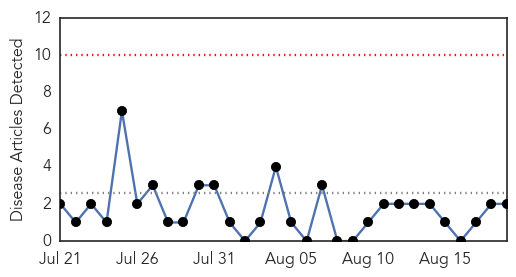

Swine Flu
30-Day Web Trend
0 alerts, 0 warnings

30-Day Twitter Trend
2 alerts, 0 warnings

Article Locations
Article Confidences

Top Articles:
Top Tweets:
-
No tweets found for Aug 19, 2015
MERS
30-Day Web Trend
1 alerts, 0 warnings
30-Day Twitter Trend
0 alerts, 0 warnings

Article Locations

Article Confidences

Top Articles:
- 1.000
- Saudi closes emergency ward after MERS spike
- 0.999
- Saudi closes emergency ward after spike in MERS virus cases
- 0.997
- Vaccine against Middle East Mystery Disease Shows Promise
- 0.994
- Emergency steps taken to defeat MERS as more fall victim to virus
- 0.984
- No cause for alarm over MERS outbreak!
- 0.968
- MERS Less Fatal In South Korea Than In Saudi Arabia, Analysis Reveals
- 0.950
- MERS less fatal in South Korea than in Saudi Arabia, analysis reveals
- 0.935
- Saudi Arabia registers increase in MERS corona cases - Xinhua
Top Tweets:
- 0.659
- AFD blog `Saudi MOH: 3 More MERS Cases In Riyadh' MERS-CoV http://t.co/8GeeI7ZX56
- 0.580
- AFD Blog `Saudi MOH Statement On The Riyadh MERS Outbreak' MERS-CoV http://t.co/PCAeWTbnsY